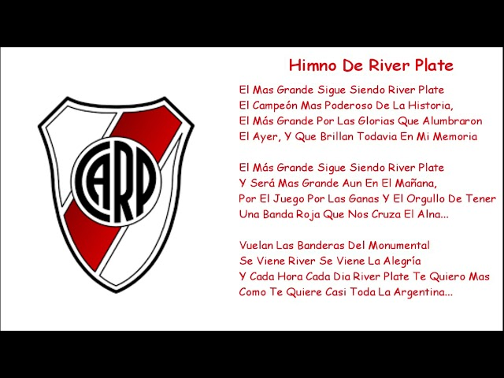

El himno de River Plate
El himno del Club Atlético River Plate fue creado en la década del diez por Arturo Antelo y su melodía es la de la canción "It"s a long way to Tipperary". Hasta el día de la fecha, este himno-emblema representa a todos los hinchas.
La gran noticia para los amantes de River es que a través de Sony Music se encuentra disponible para escuchar esta nueva versión en todas las plataformas digitales.
